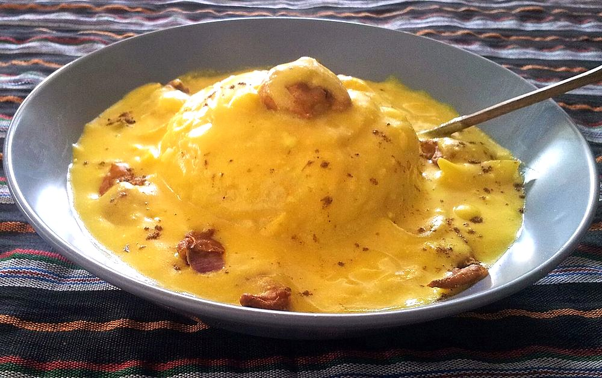

Punjabi Kadhi Pakora
tangy yogurt and gram flour gravy simmered thick, with soft onion fritters dropped in

Contains: milk, mustard
Checked against the ingredient list for ten allergens: milk, egg, fish, crustaceans, tree nuts, peanuts, sesame, mustard, soy and gluten. Brands vary, so read the label on anything new to you.
Ingredients
Quantities for 4.
- 400g, sour and well whisked Yogurtthe sourer the better. Leave it out of the fridge overnight
- 1 cup (100g) total: 6 tbsp for the kadhi, the rest for the pakoras Besan
- 5 cups Water
- 2 medium, finely sliced Onionfor the pakoras
- 3, chopped Green Chilli
- 1.5 inch, grated Ginger
- 5 cloves, minced Garlic
- 1 tsp Turmeric
- 1 tsp Chilli Powder
- 1 tsp Coriander Powder
- 1/2 tsp Fenugreek Seeds
- 1 tsp Cumin Seeds
- 1/2 tsp Mustard Seedsoptional
- 1/4 tsp Asafoetidause compounded-free hing to keep this gluten-freeoptional
- 2, broken Dried Red Chilli
- 3 tbsp Ghee
- 400ml, for frying the pakoras Neutral Oil
- 1 tsp, for the final tempering Kashmiri Chillioptional
- to taste Salt
- 2 tbsp, chopped Coriander Leavesoptional
Cookware
stovetop, kadhai
Before you start
- Leave the yogurt out of the fridge overnight so it sours properly. Fresh sweet yogurt makes a flat, milky kadhi.
- Whisk the yogurt and besan together until there is not a single lump before any heat touches it.
- Fry the pakoras while the kadhi simmers, and add them only at the end so they keep some structure.
Method
- Whisk the sour yogurt with 6 tbsp besan, the turmeric, chilli powder, coriander powder and 1 tsp salt until completely smooth, then whisk in 4 cups water.Any lump you leave now will still be there an hour later. Push it through a sieve if in doubt.
- Heat 2 tbsp ghee in a heavy pot, crackle the fenugreek and cumin seeds for 30 seconds, then add the asafoetida, half the ginger, the garlic and half the green chillies.
- Pour in the yogurt mixture and bring it to a boil on medium, stirring constantly in one direction.Do not stop stirring until it boils, or the yogurt will split into curds and whey.
- Once it boils, drop to the lowest heat and simmer uncovered 40 minutes, stirring every 5 minutes.The kadhi should reduce by a third and turn from milky to a deep gold. This slow cook is the whole dish.
- Meanwhile make the pakora batter: mix the remaining besan with the sliced onion, remaining ginger and chilli, 1/2 tsp salt and just enough water to bind, about 4 tbsp.
- Heat the oil in a kadhai to 175C and drop in rough spoonfuls of batter, 6 at a time.
- Fry 4 minutes, turning, until deep gold and firm, then drain on a rack. Loose, craggy spoonfuls fry lighter than neat balls.
- Slide the pakoras into the simmering kadhi and cook 8 minutes more so they drink up the gravy but keep their shape.
- Taste for salt. Sour kadhi needs a firm hand with it.
- For the final tempering, heat the last tablespoon of ghee, take it off the heat, stir in the kashmiri chilli and broken red chillies, and pour it over the kadhi.Off the heat, or the chilli powder burns black in two seconds.
- Scatter the coriander and serve with plain rice.
Storage
Keeps 3 days refrigerated and the flavour deepens, though the pakoras soften. Reheat gently with water, stirring. It thickens to a paste when cold. Do not freeze; the yogurt separates.
Nutrition Good estimate
Medium protein: 11+ g a serving, 11% of the calories
| Per serving223 g | Per 100 g | |
|---|---|---|
| Calories | 409+ kcal | 184+ kcal |
| Protein | 10.9+ g | 5+ g |
| Carbohydrate | 28.5+ g | 13+ g |
| of which sugars | 10.2+ g | 5+ g |
| Fibre | 5.0+ g | 2+ g |
| Fat | 29.1+ g | 13+ g |
| of which saturated | 9.7+ g | 4+ g |
| of which unsaturated | 17.5+ g | 8+ g |
The + means ingredients given to taste rather than by weight are counted as zero, so the true figure is a little higher than shown. Worked out from the listed quantities; most of the ingredient list could be weighed. Ingredients given to taste rather than by weight are counted as zero, so the real figure is a little higher than this. The + says so. Some ingredients have no exact match in the nutrient database and use the nearest equivalent: asafoetida. Estimated from raw ingredients using USDA FoodData Central. Cooking changes are not modelled, and added salt is excluded, so sodium is not given.
Written and checked against sources, not cooked in a test kitchen. Times, yields, allergens and nutrition are worked out rather than measured, so use your own judgement on doneness and on storing. More in About.